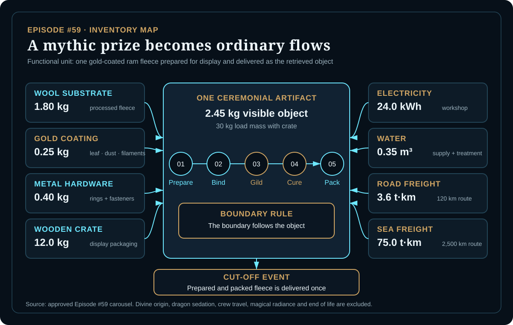
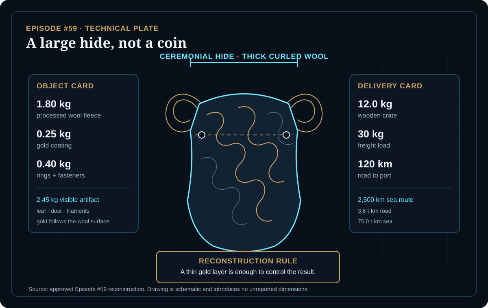
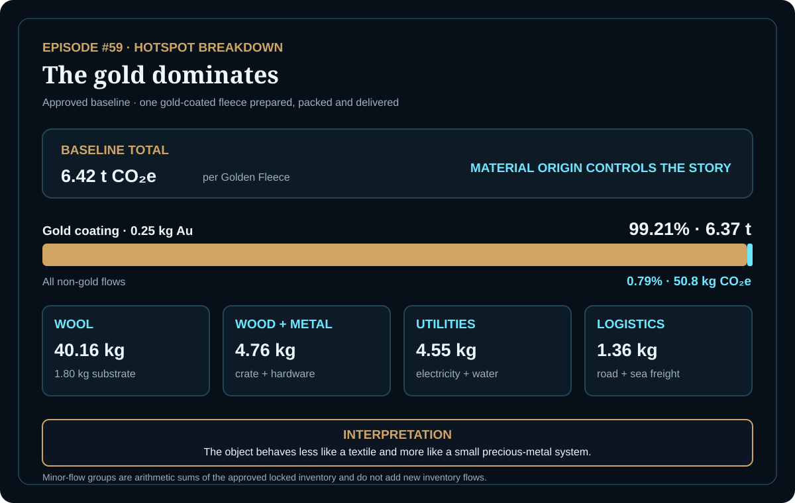

EPISODE #59 · MYTHS & LEGENDS
The Golden Fleece
How much carbon hides in a mythic prize?
THE SUBJECT
The function is not warmth. It is visible, ritualized gold.
The approved episode reconstructs the Golden Fleece as one large ceremonial ram hide with thick curled wool. Its reference flow is 1.80 kg of processed wool, 0.25 kg of gold applied as leaf, dust and filaments, 0.40 kg of rings and fasteners, plus the support materials and utilities needed to prepare and deliver the object.
The boundary follows the object, not the adventure. Wool preparation, gold coating, hardware, crate, workshop utilities and road and sea freight are included. Divine origin, dragon sedation, Argonaut crew travel, magical radiance and end of life remain outside the model.
Reporting basis
One prepared artifact delivered once; no repeated-use allocation is claimed.
Reference flow
1.80 kg processed wool plus 0.25 kg of gold coating and support flows.
Object and load
The visible artifact is 2.45 kg; the freight load is 30 kg with a 12 kg wooden crate.
Main hotspot
The gold coating contributes 99.21% of the approved baseline footprint.
VISUAL MODEL
A prize becomes a product system
The inventory map follows the artifact from wool preparation to delivery; the technical plate freezes the approved masses and logistics parameters without adding unreported geometry.


DETAILED LIFE CYCLE INVENTORY
The locked inventory
The eight approved contributions reconcile to the reported 6.42 t CO₂e baseline. The source-factor page is reproduced only where the approved episode states the factor explicitly.
| Stage | Component / activity | Activity data | Climate change | Modelling basis |
|---|---|---|---|---|
| Gold coating | Gold leaf, dust and filaments | 0.25 kg Au | 6.37 t CO₂e | S&P 2024 proxy: 25,463 kg CO₂e/kg Au. The source identifies this as mine Scope 1+2 intensity. |
| Fleece substrate | Processed wool fleece | 1.80 kg | 40.16 kg CO₂e | DEFRA 2026 clothing proxy: 22.31 kg CO₂e/kg. |
| Packaging | Wooden display crate | 12.0 kg | 3.23 kg CO₂e | DEFRA 2026 wood factor: 0.2695 kg CO₂e/kg. |
| Support materials | Metal rings and fasteners | 0.40 kg | 1.53 kg CO₂e | Approved locked-inventory contribution; the source-factor page does not separately reproduce the metal factor. |
| Workshop | Electricity for preparation, gilding and curing | 24.0 kWh | 4.42 kg CO₂e | DEFRA 2026 full electricity factor: 0.18436 kg CO₂e/kWh. |
| Workshop | Water supply and treatment | 0.35 m³ | 0.13 kg CO₂e | Approved locked-inventory contribution; the source-factor page does not separately reproduce the water factor. |
| Logistics | Road freight to port | 3.6 t·km | 0.37 kg CO₂e | 30 kg load × 120 km. DEFRA 2026 road-freight factor: 0.10356 kg CO₂e/t·km. |
| Logistics | Sea freight across the Black Sea | 75.0 t·km | 0.99 kg CO₂e | 30 kg load × 2,500 km. DEFRA 2026 sea-freight factor: 0.01321 kg CO₂e/t·km. |
| Approved baseline total | 6.42 t CO₂e | Reported per delivered Golden Fleece. | ||
Included
Wool preparation, gold coating, metal hardware, wooden crate, workshop electricity, water supply and treatment, road freight and sea freight.
Excluded
Divine origin, dragon sedation, Argonaut crew travel, magical radiance and end of life.
Proxy rule
DEFRA is used first. Gold is escalated to an external proxy because a generic-metal factor would be physically misleading.
Bias note
The gold factor represents mine Scope 1+2 intensity and may underestimate a full cradle-to-gate gold burden.
HOTSPOT
The gold dominates
A 0.25 kg gold layer contributes about 6.37 t CO₂e. Every non-gold material, utility and logistics flow together contributes 50.8 kg CO₂e.

Main result
6.42 t CO₂e
Per prepared and delivered Golden Fleece.
Gold coating
99.21%
About 6.37 t CO₂e from 0.25 kg Au.
All non-gold flows
50.8 kg CO₂e
Wool, materials, utilities and freight combined.
Road + sea freight
1.36 kg CO₂e
The famous voyage is not the hotspot.
Gold coating mass
0.10 kg Au → 2.60 t CO₂e
0.25 kg Au → 6.42 t CO₂e
0.60 kg Au → 15.33 t CO₂e
Only gold mass changes; all other flows remain fixed.
Mass interpretation
Even the low-coating case remains gold-driven. Increasing the applied gold turns the fleece progressively from a textile artifact into a precious-metal object.
Mine-intensity proxy
8,520 kg/kg Au → 2.18 t CO₂e
25,463 kg/kg Au → 6.42 t CO₂e
38,581 kg/kg Au → 9.70 t CO₂e
Only the gold emission factor changes.
Origin interpretation
Gold mass, textile proxy, utilities and freight stay locked. Material origin changes the ending without changing the object.
THE VERDICT
Gold defines the footprint.
DEFRA covers the ordinary flows.
The voyage is not the hotspot.
Gold mass and mine intensity drive the entire scenario range.
The shine is small; the supply chain is not.